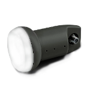

Satellite LNB are quite cheap and easy to get devices. There are different models for different bands (C, Ku, and Ka) with different characteristics like SNR, noise figure, etc. Typically those devices are used with TV Set-top boxes.
More interesting is that LNB can be easily connected to an SDR receiver. LNB is a simple frequency down-converter with an output band in 950-1750 MHz (typically), which is great for all known SDR. This gives the ability to discover higher frequency ranges (10-12 GHz and even 18-21 GHz): receive and analyze satellite signals. Additionally, you can use such a setup in amateur radio astronomy.
LNB operation
Of course, there are professional LNB models for the telecommunication systems. Those LNB have excellent characteristics and can provide different connection options. But they are expensive and not interesting for HAM usage. The operation principle of the “home” LNB and professional systems are the same.
{kind=link}
To operate correctly, satellite LNB requires different voltages to select signal polarization (Vertical/Right or Horizontal/Left). Additionally, some LNB can switch to the secondary LO (higher band) when an injected 22 kHz tone signal is directed on the power supply line.
You can find all Polarization/Band parameters in the tables down below.
C-band LNB
| LNB Supply voltage | Polarization | LO frequency | Frequency band | IF range |
|---|---|---|---|---|
| 13 V | Vertical | 5.15 GHz | 3.40–4.20 GHz | 950–1750 MHz |
| 18 V | Horizontal | 5.15 GHz | 3.40–4.20 GHz | 950–1750 MHz |
Ku-band LNB, North America
| LNB Supply voltage | Polarization | LO frequency | Frequency band | IF range |
|---|---|---|---|---|
| 13 V | Vertical | 10.75 GHz | 11.70–12.20 GHz | 950–1450 MHz |
| 18 V | Horizontal | 10.75 GHz | 11.70–12.20 GHz | 950–1450 MHz |
Universal Ku-band LNB, Europe
| LNB Supply voltage | Tone signal | Polarization | LO frequency | Frequency band | IF range |
|---|---|---|---|---|---|
| 13 V | 0 | Vertical | 9.75 GHz | 10.70–11.70 GHz | 950–1950 MHz |
| 18 V | 0 | Horizontal | 9.75 GHz | 10.70–11.70 GHz | 950–1950 MHz |
| 13 V | 22 kHz | Vertical | 10.60 GHz | 11.70–12.75 GHz | 1100–2150 MHz |
| 18 V | 22 kHz | Horizontal | 10.60 GHz | 11.70–12.75 GHz | 1100–2150 MHz |
North America DBS LNB
| LNB Supply voltage | Polarization | LO frequency | Frequency band | IF range |
|---|---|---|---|---|
| 13 V | Right-hand | 11.25 GHz | 12.20–12.70 GHz | 950–1450 MHz |
| 18 V | Left-hand | 11.25 GHz | 12.20–12.70 GHz | 950–1450 MHz |
Europe DTH LNB
| LNB Supply voltage | Polarization | LO frequency | Frequency band | IF range |
|---|---|---|---|---|
| 13 V | Right-hand | 10.75 GHz | 11.7 GHz–12.75 GHz | 1100–2150 MHz |
| 18 V | Left-hand | 10.75 GHz | 11.7 GHz–12.75 GHz | 1100–2150 MHz |
Ka-band LNB
| LNB Supply voltage | Tone signal | Polarization | LO frequency | Frequency band | IF range |
|---|---|---|---|---|---|
| 13 V | 0 | Vertical | 19.25 GHz | 20.2–21.2 GHz | 950–1950 MHz |
| 18 V | 0 | Horizontal | 19.25 GHz | 20.2–21.2 GHz | 950–1950 MHz |
| 13 V | 22 kHz | Vertical | 20.25 GHz | 21.2–22.2 GHz | 950–1950 MHz |
| 18 V | 22 kHz | Horizontal | 20.25 GHz | 21.2–22.2 GHz | 950–1950 MHz |
Ka-band LNB (Saorsat)
| LNB Supply voltage | Polarization | LO frequency | Frequency band | IF range |
|---|---|---|---|---|
| 13 V | Right-hand | 21.20 GHz | 19.7 GHz–20.20 GHz | 1000–1500 MHz |
| 18 V | Left-hand | 21.20 GHz | 19.7 GHz–20.20 GHz | 1000–1500 MHz |
LNB controller
I decided to build and share this simple LNB controller. The controller is controlled with PC software (GUI and CLI) over the USB.
There are two independent channels, so it’s possible to run and tune two independent LNBs.
{kind=link}
The controller produces a stable 13/18 v and 22kHz signal. It’s required to use an external Bias-T circuit. I’m using this popular bias-T model (it also can be found on Aliexpress).
The Bias-T box requires a tiny rework. It’s important to remove one big capacitor. This helps to save the injected 22 kHz signal.
{kind=link}
Here is an example of the hardware setup. HackRF One SDR + Bias-T + LNB controller. Receiving satellite signals from the satellite antenna.
{kind=link}
Hardware is quite simple. The controller is based on a popular STM32F103 MCU board, aka “Blue Pill.” In my case, it’s a black “STM32 MINI” from RobotDyn. I found this version of the “pill” is of better quality and more reliable. The rest of the LNB controller is built on a breadboard with SMD and through-hole components. Voltage regulators are based on LM317.
The board schematic is down below. All signals are just connected to the appropriate MCU board pins.

As a Step-up converter, I’m using the MT3608 board. This converter can be replaced with anything that can provide up to 20V and stable >=400 mA. A low noise converter is better. Sure, this converter can be removed and use just a good enough external power supply.
There are two power options for the converter:
- USB from the MCU board. But it would be best if you had a really good USB connector, cable, and host that can provide enough current.
- External PSU.
You can see here a power switch (Q1 MOSFET) that allows completely disable and enable the power. A voltage regulator is based on the popular LM317T and configurable resistor divider. The tone signal is injected into the voltage control line. It’s better to use a film capacitor here.
This voltage regulator produces a little bit higher voltages. This is required in case of possible long RF cable, but still in a valid range.
You can see oscillograms down below.
Clean 14V (Vertical/Right polarization) and with 22kHz signal injected.
The tone signal should be 50-60% duty cycle and ~650 mV peak to peak. I’m using a 55% duty cycle, and this is Ok for all my LNBs.
{kind=link}
{kind=link}
Controller software
You can find the full description, hardware schematics, MCU firmware, and desktop application sources on my GitHub here: https://github.com/olegkutkov/satellite-lnb-controller
STM32 controller firmware source code can be found here: mcu_firmware
To compile this project you will need gcc-arm-none-eabi package
Firmware compilation:
cd mcu_firmware
make
Also, there are already compiled binaries in mcu_firmware/precompiled
Please configure STM32 boot pins accordingly to the GitHub project page.
MCU firmware can be flashed with “upload” command.
make upload
There is a “Hello” blink pattern on the board LEDs if a successful firmware starts.
Desktop application
There are GUI and console applications that live here. Both programs can be run on Linux and macOS (Intel) systems.
GUI is written with the GTK-3 framework.
You will need gtk-3.0 library and development files to build and run the GUI application.
On the Linux system install libgtk-3-dev package and you ready to build the program.
On the Apple system (x86) you can install gtk+3 libraries with homebrew.
brew install epoxy
brew install gtk+3
Library installation may take some time.
It’s important to export PKG_CONFIG environment variable with a path to the installed library and header files.
export PKG_CONFIG_PATH=/usr/local/Cellar/libepoxy/1.5.4_1/lib/pkgconfig/:/usr/local/Cellar/gtk+3/3.24.24/lib/pkgconfig/
Probably you will need to change packages versions to your current version. Please verify the paths.
Now everything is ready to build the desktop software. You can type make to build both programs (GUI and console). Alternatively, you can type make gui or make cli to build only one of the programs.
The GUI program is quite straightforward. You can select your serial device (typically it’s /dev/ttyACMX on Linux and /dev/tty.cu.usb* on the Apple system). The list of the available devices is built automatically during the program start-up. Then you can switch On and Off the system power supply and configure both LNB channels (polarization and 22KHz tone signal). The program is constantly measured output voltages of the channels. The Refresh interval is 500 ms.
Additionally, this program reads the whole state of the hardware to be in sync GUI-hardware state.
{kind=link}
Also, you can do everything with the console version. This is might be helpful for a custom and automatic satellite receiver or signal scanner.
You need to specify the serial device path and required command. For example, get the current state of the hardware:
lnb_controller-cli -p /dev/ttyACM0 -g
Enable and disable the power supply:
lnb_controller-cli -p /dev/ttyACM0 -w 1
lnb_controller-cli -p /dev/ttyACM0 -w 0
Switch channel one LNB to the Horizontal polarization and enable 22kHz signal:
lnb_controller-cli -p /dev/ttyACM0 -c 1 --horizontal_pol
lnb_controller-cli -p /dev/ttyACM0 -c 1 --tone_on
Console program on macOS:
{kind=link}
Thanks for reading and happy RF hacking!
Очень интересное решение!
Попробую собрать.
Можно вместо Bais-T вот такое поставить?
https://ibb.co/jbN7zB9
Я через него сейчас разные LBNы на HackeRF слушаю ,правда пока без 22 кГц, просто 18 Вольт подаю.
I am not good enough to make projects like that myself, but I love reading your side and your spirit! Keep going!
Could board like OLIMEXINO STM32F103RBT6 work as controller?
Sure